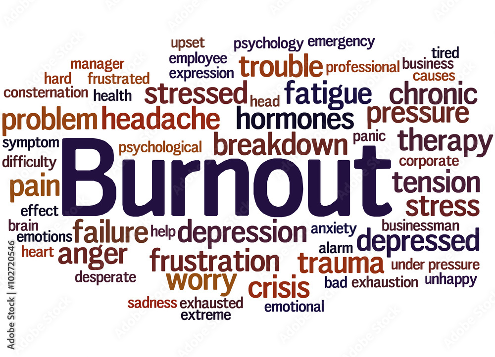

¿Qué es el Síndrome de Burnout?
El síndrome de burnout o "síndrome del trabajador quemado" es un estado de agotamiento físico, emocional y mental relacionado con el ámbito laboral. Fue reconocido por la OMS en 2019 como un fenómeno ocupacional.

En el sector IT se manifiesta como pérdida de motivación, disminución del rendimiento, irritabilidad y sentimientos de ineptitud frente a las demandas laborales.
Causas del Burnout en el Sector IT
- Plazos ajustados: Ciclos de desarrollo acelerados y fechas de entrega irreales.
- Alta carga cognitiva: Necesidad de constante aprendizaje y actualización.
- Presión constante: Mantener sistemas críticos en funcionamiento.
- Expectativas desmedidas: Cultura del "siempre disponible" y heroísmo laboral.
- Falta de control: Cambios constantes en requisitos y prioridades.
Prevención y Manejo
Algunas estrategias para prevenir el burnout en desarrollo de software:
- Establecer límites claros entre trabajo y vida personal
- Practicar técnicas de gestión del tiempo (como Pomodoro)
- Fomentar una cultura de feedback y apoyo en equipos
- Priorizar tareas y aprender a decir "no" cuando sea necesario
- Incorporar pausas activas y ejercicio físico regular
Recursos de Ayuda
Si crees que puedes estar experimentando burnout, estos recursos pueden ayudarte: